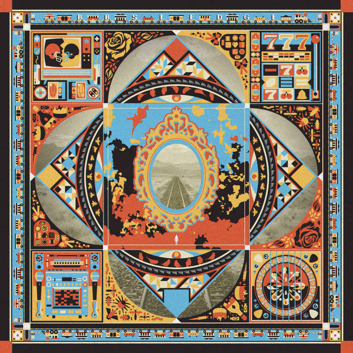
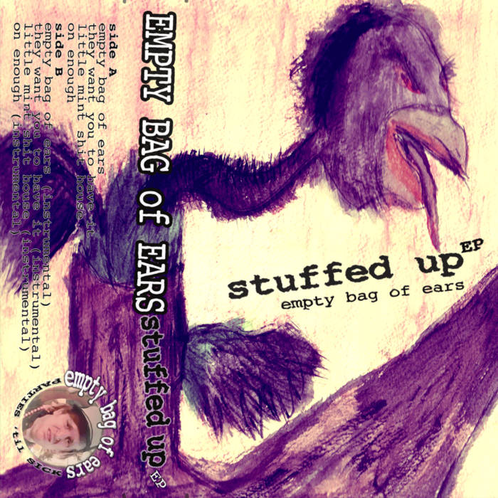
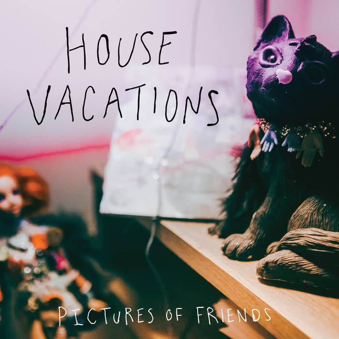

Any Old Train — B.B. Sledge
The first album listed here is his most recent release under his band's name, B.B. Sledge. Andy wrote all of the songs, sings, and plays electric guitar.
Andy was born in Omaha, Nebraska and lived in Plattsmouth, NE for the first year of his life. His family moved to Millard (Omaha), where he attended Millard public schools before graduating from the University of Nebraska at Omaha in 2012 with a B.S. in Communications, focusing on Broadcasting and New Media. While his professional path has largely been in warehousing and inventory management, music has always been the deeper throughline of his life.
From his earliest memories, Andy was singing, humming, and inventing little instrumental worlds while playing with toys. Music became something more intentional and expressive in his teenage years, around age sixteen, when it began to feel like a place where his inner life could exist more fully. He taught himself guitar and started experimenting with songwriting. Since then, he has been involved in numerous bands across Omaha and Lincoln, including Family Picnic, House Vacations, And How, B.B. Sledge, and currently Strange Pain. B.B. Sledge released a full-length album in 2025, composed of all-original songs written by Andy.
Andy’s creative influences span decades and mediums. His musical touchstones range from the melodic invention and irreverence of The Beatles to the tenderness of Belle & Sebastian, the raw energy of Sleater-Kinney and the immersive, emotional worlds of video game composers like Koji Kondo and Miki Higashino. He has a particular fondness for retro video games. While they are profoundly nostalgic for him, they also weave together music, story, and striking visuals. The marriage of these elements inspires Andy to supplement his live musical performance with other visual elements, like atmospheric lighting, projections, and animation.
In his quieter moments, Andy enjoys revisiting old games and watching comedies and science fiction. At his core, he describes himself simply and sincerely: kind, peaceful, and open.
Andy is always creating music. Whether he's writing a new song, recording, or performing, he is at all times engaged with music. His passion for music is more than a hobby—it's a way of life. Andy is a proficient and expressive guitar player. He plays acoustic guitar beautifully, both with a pick and finger-picking style. When he plays his electric guitars, he utilizes his pedal board and amplifier to create unique effects and controlled feedback.
Music is his number one pastime, but when he's taking a break from singing and shredding, he likes to decompress with a classic video game.
Andy has also played baseball since he was in grade school. As an adult, he has played in amateur leagues as well. While he's not currently playing in a league, he loves to practice pitching and watch old baseball games.
A few snapshots of Andy and his bandmates.
Andy has been involved in several musical projects over the past two decades. Click any album cover below to open the Bandcamp page.

The first album listed here is his most recent release under his band's name, B.B. Sledge. Andy wrote all of the songs, sings, and plays electric guitar.

Released in 2017 as Andy’s solo project. All instruments and vocals are performed by Andy.

Andy was the lead singer and rhythm guitarist and co-wrote all of the songs with his bandmates.
Released in 2011. Andy was the lead singer, rhythm guitarist, and primary songwriter for the band.